Articles
Helpful articles about flowers, occasions and Vietnamese traditions.
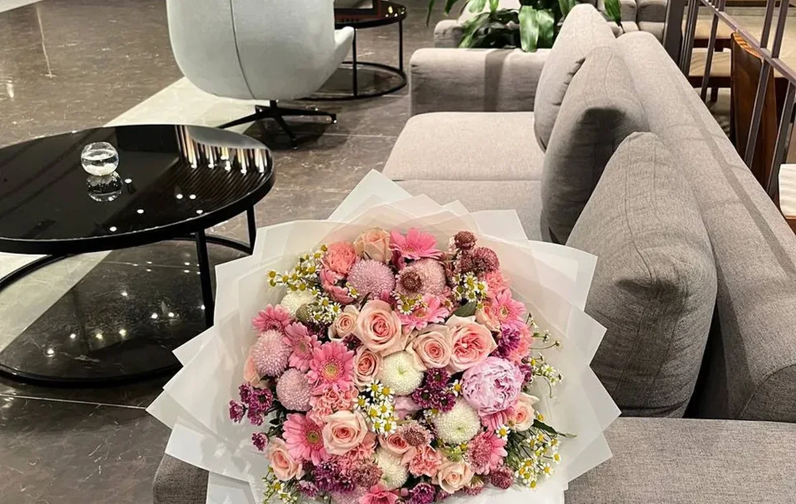
Paying for Flowers in Rubles, Dong and Dollars in Nha Trang
All the convenient ways to pay: rubles, dong, dollars, USDT and cash — pay the way that suits you, even remotely from an…
read →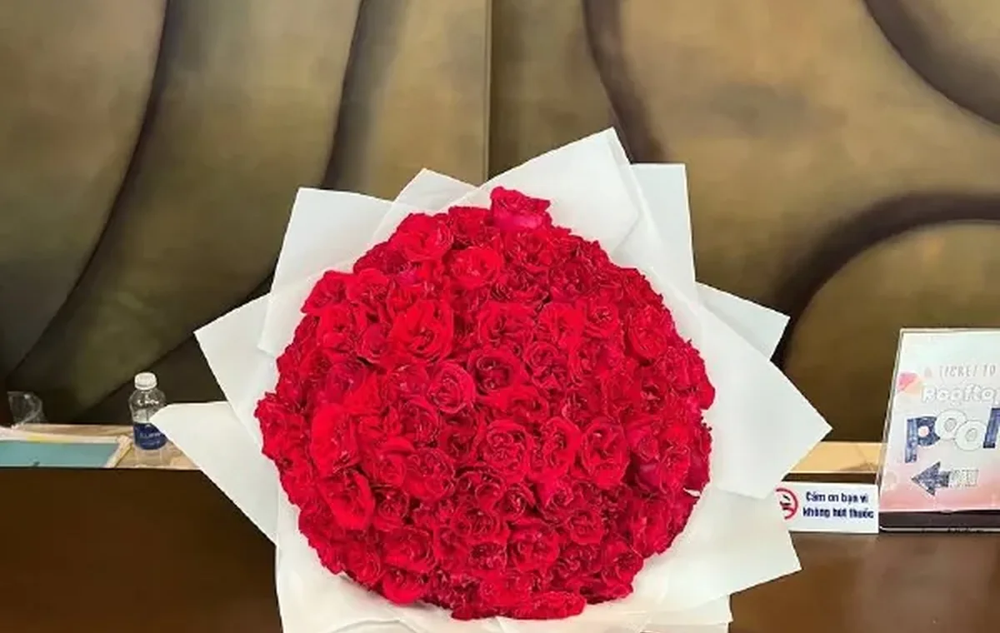
What Flowers to Choose for a Wife — Bouquet Guide in Nha Trang
Roses, mixed bouquets and a beautiful hotel surprise: how to choose a bouquet for your wife and present it memorably.…
read →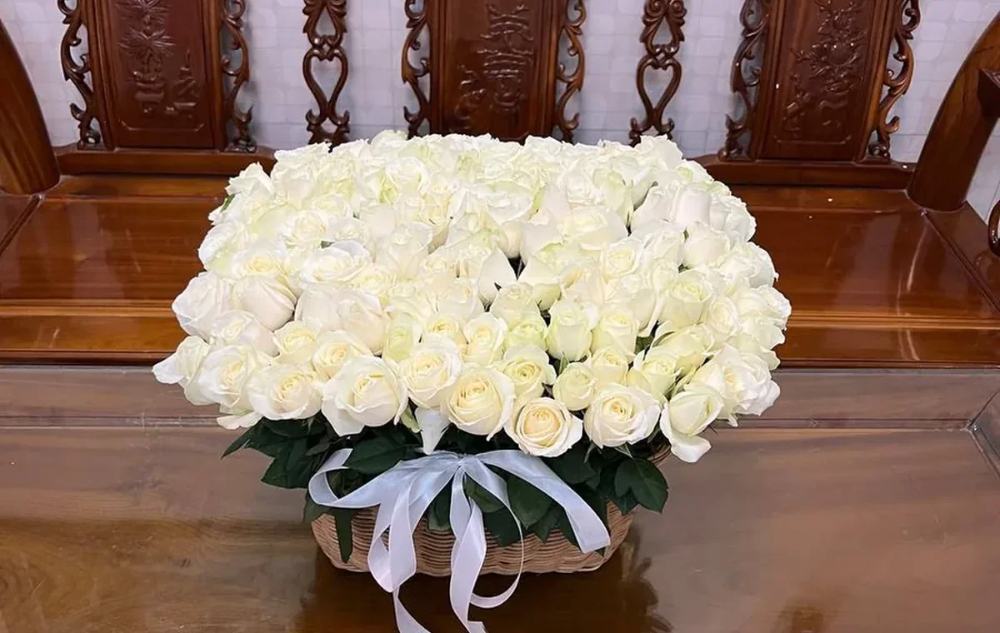
How to Care for Roses in Nha Trang's Heat
Simple steps to make roses last as long as possible in hot Nha Trang — trimming, water, temperature and common mistakes.…
read →What Flowers to Give for a Jubilee in Nha Trang
Large bouquets and baskets, the number of roses and colour for a jubilee — how to choose a truly grand gift and order de…
read →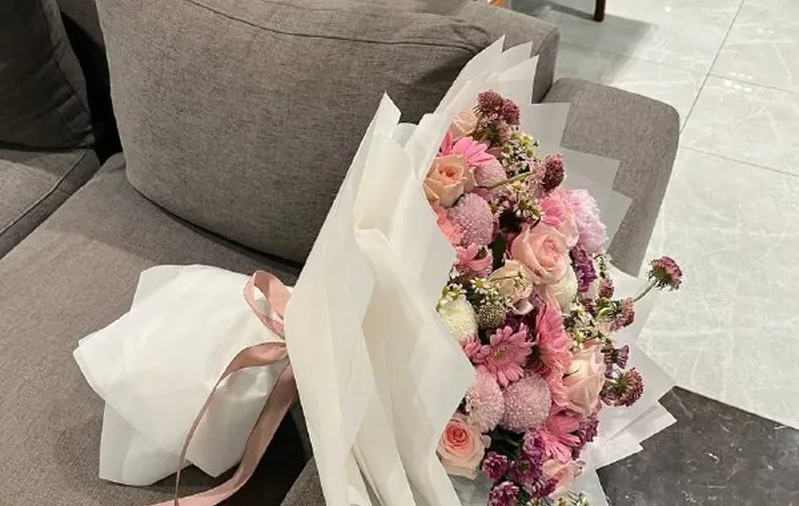
The Language of Flowers: What to Say with a Bouquet in Nha Trang
What flowers really say: the meaning of types, colour and number — and how to build a bouquet that carries exactly your …
read →What Flowers to Choose for a Girlfriend — Bouquet Guide in Nha Trang
Roses and soft shades: how to choose a bouquet for your girlfriend and present it beautifully with delivery to …
read →What Flowers to Give for a Love Confession in Nha Trang
Red roses, tender shades and a beautiful hotel surprise: which flowers to pick for a love confession and how to arrange …
read →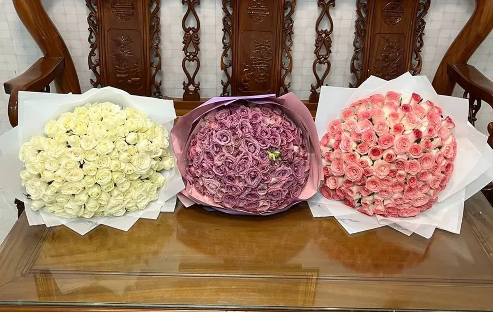
Rose Color Meanings: What Each Shade Says
Red for love, white for respect, pink for tenderness. Here is what each rose color means and how to choose the right sha…
read →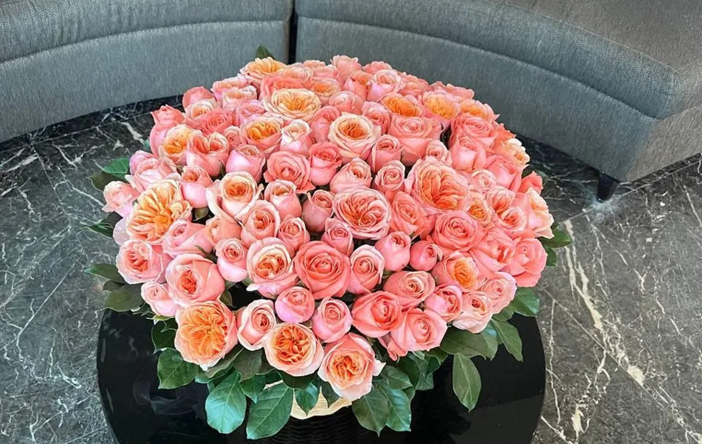
Flower Delivery to Nha Trang Hotels: How It Works
Step by step: how to deliver a bouquet to a hotel — to the room or the front desk, what to include and how fast we arriv…
read →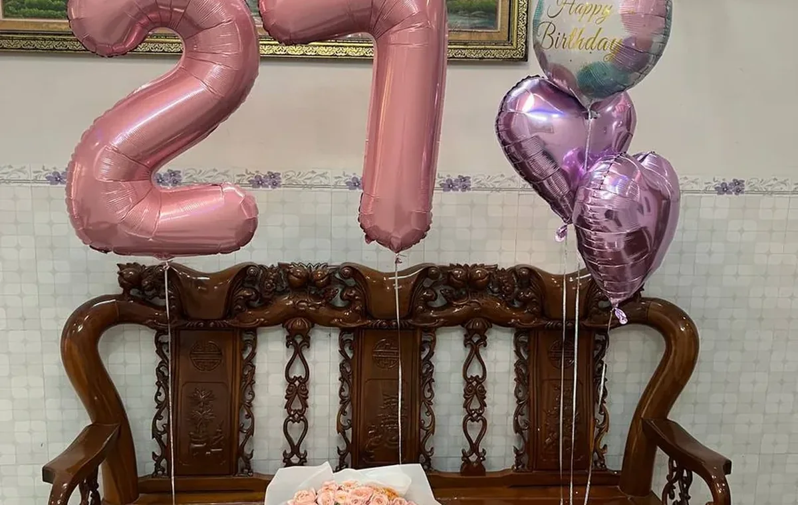
Flowers and Balloons: The Perfect Surprise Gift in Nha Trang
Why a bouquet plus balloons beats each on its own, and how to build the perfect surprise delivered right to the room.…
read →Helium Balloons in Nha Trang: Delivery & Decor
Balloon sets, number figures, photo zones and ready party kits — what to choose and how to get helium balloons delivered…
read →How to order flower delivery
A step-by-step guide: choosing, zones, payment and timing of flower delivery in Nha Trang.
read →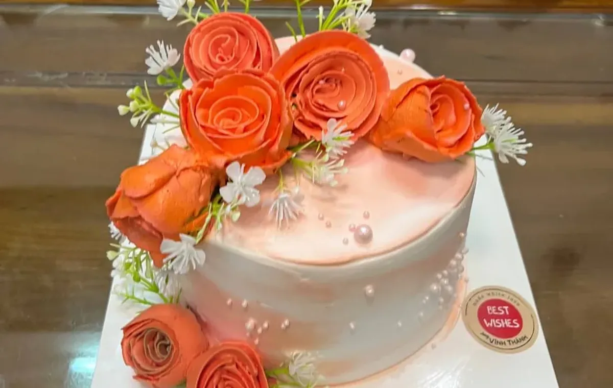
Cake delivery in Nha Trang
What cakes are available, how to choose for the occasion and the cake-with-bouquet rule.
read →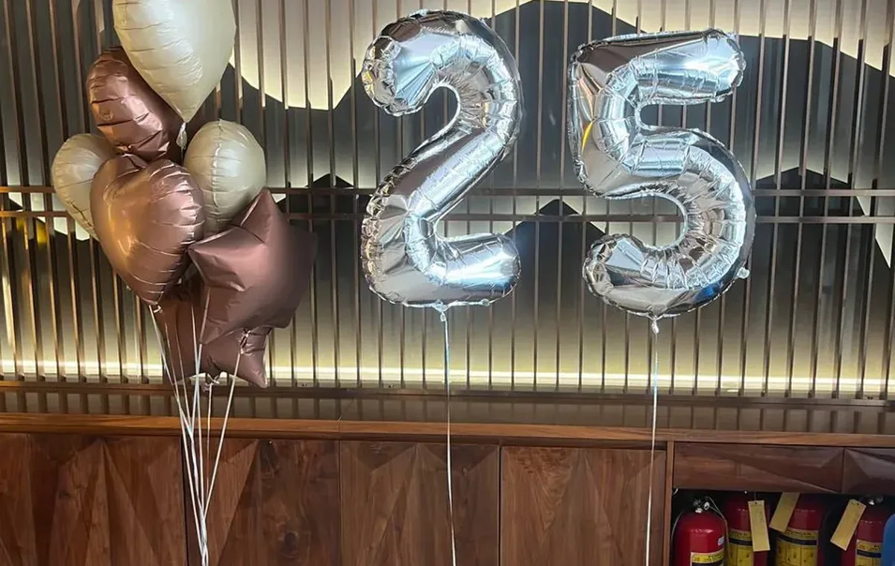
Helium balloons in Nha Trang
S/M/L sets, number and heart balloons, a bouquet combo and a photo spot.
read →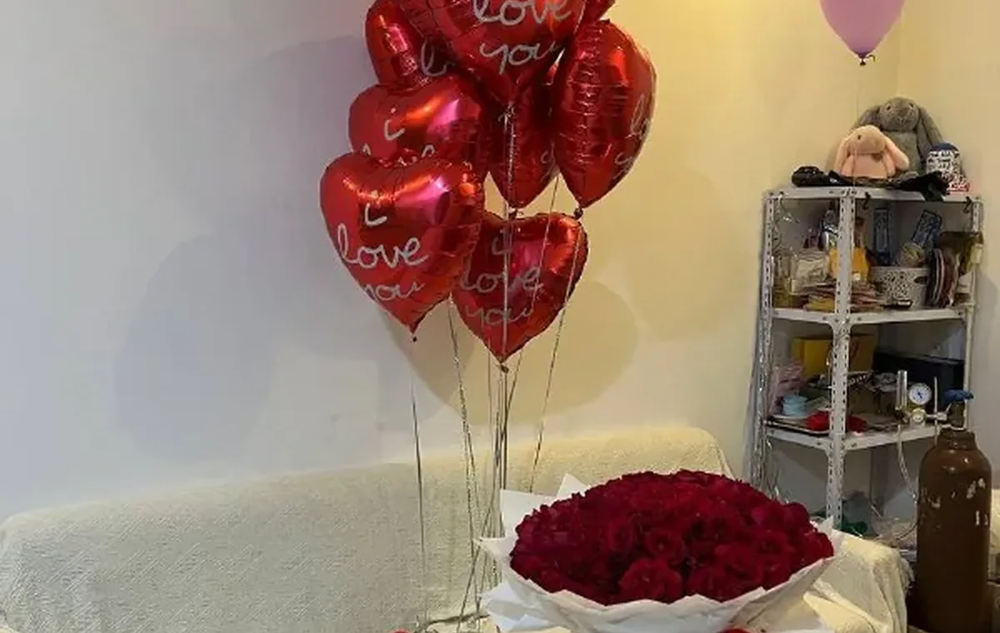
Flowers for Tet in Nha Trang
Vietnamese New Year traditions, symbolic flowers and gift ideas.
read →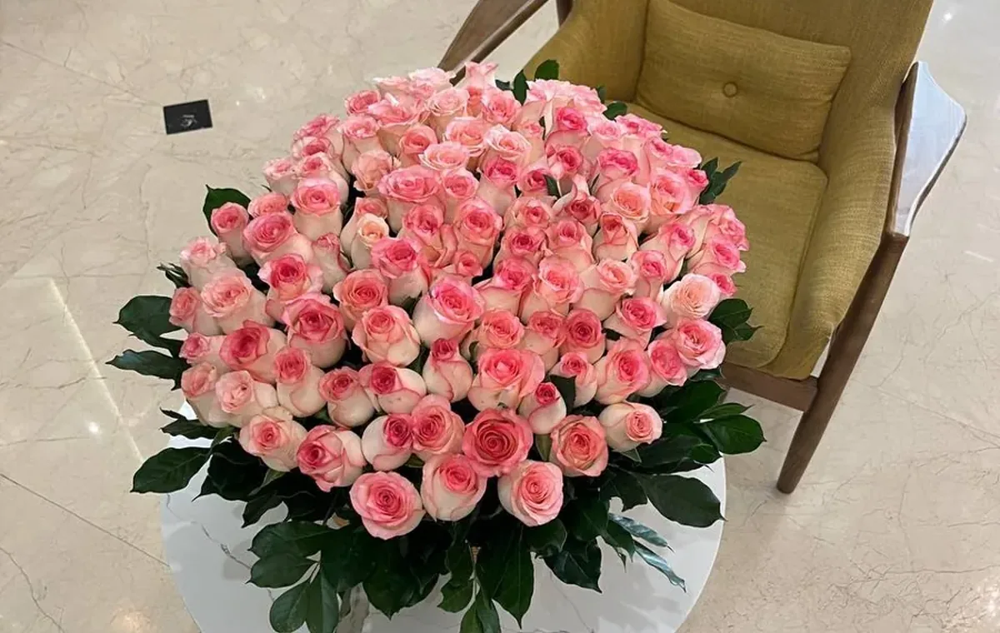
Honeymoon in Nha Trang
Flowers to the room, petals, balloons and a surprise cake for newlyweds.
read →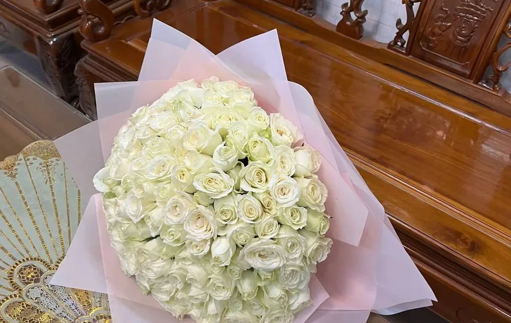
How many roses to give: 25, 51, 101
What the number of roses means and how many to give by occasion — a guide with Nha Trang delivery.
read →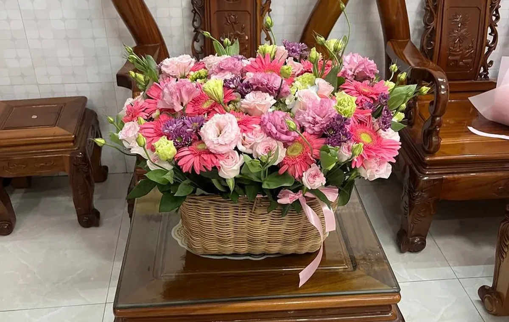
Where to buy flowers in Nha Trang
Market, shops or delivery — where to get fresh flowers in Nha Trang and why delivery is easier.
read →
A business bouquet in Nha Trang
Which flowers suit a colleague or boss, business wrapping and office delivery.
read →
A 'just because' bouquet in Nha Trang
How to surprise with no occasion: which flowers to choose and surprise delivery to the door.
read →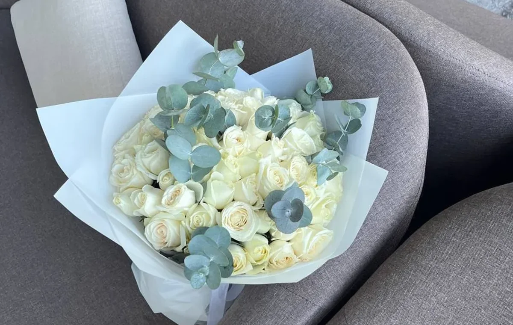
Flowers for a newborn in Nha Trang
Gentle pastel bouquets for a new mum, what to give and delivery to the maternity ward.
read →Valentine's Day flowers in Nha Trang
Red roses, heart balloons and romantic bouquets delivered for February 14.
read →
Flowers for March 8 in Nha Trang
Which flowers for a wife, mum and colleagues, bright baskets and next-day hotel delivery.
read →Apology flowers: how to make up
Which flowers to choose, what to write and how to deliver a delicate apology bouquet in Nha Trang.
read →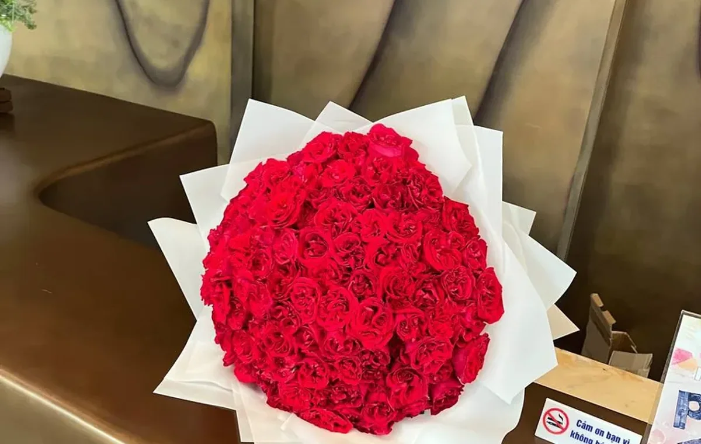
A marriage proposal in Nha Trang
Romantic spots by the sea, which roses to choose and how to arrange a surprise with delivery.
read →
What to give a girl on a date
Which flowers to choose, how many roses and how to arrange a romantic surprise with delivery in Nha Trang.
read →Bai Soi Beach in Nha Trang
A quiet pebble 'mini Ha Long' in northern Nha Trang: multicoloured stones, white coral and two big seaside rocks.
read →Chua Thay Pagoda
An 11th-century pagoda near Hanoi — cradle of the water puppet legend: master Tu Dao Hanh, the Thuy Dinh stage and the puppets.
read →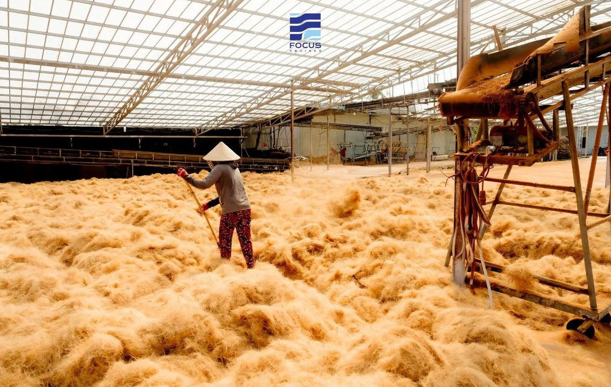
An Thanh coir fiber village
The 'golden threads' craft village in Ben Tre: how coconut husk becomes coir fibre, the Thom River and delta life.
read →
Chau Doc floating village
A floating fishing village in the Mekong Delta: fish-cage houses, basa farming, life on the water and boat tours.
read →
Bia hơi: street beer
Bia hơi — Vietnam's fresh daily draft beer: the plastic-stool culture of old Hanoi, its price, the cheers and beer in Nha Trang.
read →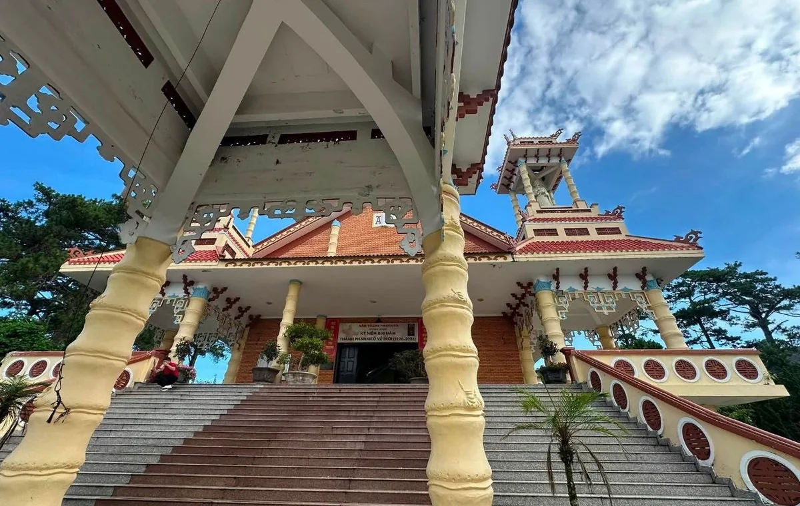
Du Sinh Church, Da Lat
Du Sinh Church in Da Lat — the city's only church in the Vietnamese style: a đình-like roof, bamboo columns and dragon railings among the pines.
read →
Bát Tràng pottery village
Bát Tràng — a 700-year-old pottery village near Hanoi: how Vietnamese porcelain is made and what to bring home.
read →
Vietnam's old buses (xe đò)
Xe đò — Vietnam's old intercity buses: where the name comes from, what they looked like and which stations Nha Trang remembers.
read →Wildlife of Vietnam
The saola, rare monkeys, the Hon Mun reefs off Nha Trang and sea turtles — a short guide to Vietnam's wildlife.
read →
Vietnamese Engineering
VinFast and THACO, warships, Viettel's drones, satellites and a giant shipyard near Nha Trang — what Vietnam builds itself.
read →
Vietnam's motorbike festivals
The biggest: Vietnam Bike Week in Cam Ranh, Superbike Fest in Nha Trang and the Ho Chi Minh City fest.
read →
Vietnam's waterfalls
The five most beautiful: giant Ban Gioc, seven-tiered Pongour, Dray Nur, the Silver Falls of Sapa and Yang Bay near Nha Trang.
read →Vietnam's sea
What the sea gives the country: fish, oil, tourism and Nha Trang's corals — and its downsides: typhoons, erosion, dying reefs.
read →
Hanoi
A thousand years of the city of the rising dragon: the Old Quarter, the Lake of the Returned Sword and the Temple of Literature.
read →Vietnam's borders
Three land neighbours (China, Laos, Cambodia), 3,260 km of coast, seas, islands and where Nha Trang sits.
read →
The USSR and Vietnam
A story of friendship: wartime aid, the Cam Ranh base near Nha Trang, Vietsovpetro and ties today.
read →
Little-known facts
The world's largest cave, a cat in the zodiac, egg coffee, a country with no coins and 54 peoples.
read →
Craft villages
Bat Trang pottery, Van Phuc silk, Hoi An lanterns and Quang Phu Cau incense — where to go for handmade treasures.
read →
Protecting your skin
Nha Trang sun, heat and sea: which SPF to choose, how to beat prickly heat and what to do if you get burnt.
read →
The map of Vietnam
North, centre and south — three different worlds: climate, dialects, regional character, where Nha Trang sits and the new 2025 map.
read →
Vietnam's agriculture
What Vietnam grows and raises: rice, coffee, fruit, pigs, poultry, buffalo and fish — and what locals eat every day.
read →
Vietnamese football
The Park Hang-seo era, the 2018 sensation, Kim Sang-sik's 2024 ASEAN Cup win, the stars and how the country celebrates.
read →
Famous people of Vietnam
Heroes of the past — Ho Chi Minh, the Trung Sisters, General Giap — and today's stars: billionaires, musicians, athletes.
read →
Vietnam's exports and imports
What Vietnam sells and buys: electronics, footwear, coffee and rice, partners the US and China, the surplus and 2025 US tariffs.
read →
Vietnam's Biggest Companies
Vingroup and VinFast, Viettel, FPT, the big banks, Hoa Phat and Vietjet — who drives Vietnam's economy and which names to know.
read →
Myths About Vietnam Everyone Believes
War, poverty, «Chinese characters», a «cheap beach» — we bust the most popular myths about Vietnam and show how it really is.
read →
How Vietnam Has Changed in the Last 15 Years
Economic and income growth, a tourism boom, digital life, metros and a new Nha Trang — what changed from 2010 to 2025 and why now is a great time to visit.
read →
How Vietnam's Political System Works
One party and the pillars of power, the National Assembly, Doi Moi reforms and the new provincial map — what it means for travellers.
read →
What Vietnamese Believe: Religion, Traditions, Values
Ancestor worship, Buddhism, Catholics, Cao Dai and Hoa Hao, Confucian values and Tet — what Vietnamese really believe.
read →
What Vietnamese Youth Live For: Lifestyle 2026
Vietnam's youngest generation: TikTok and social media, cafe culture, startups, study abroad and traditions.
read →
The Vietnam–US War: Interesting Facts and What to See
The "American War", the Cu Chi and Vinh Moc tunnels, the 17th parallel, the Cam Ranh base near Nha Trang and the places you can visit today.…
read →
How Vietnam Embraced the AI Boom: the 2026 Race
Vietnam is betting big on AI: NVIDIA data centres, FPT's $200M AI factory, a national strategy to 2030 and Google's $79B forecast.…
read →
UNESCO World Heritage Sites in Vietnam: All 9 (2026 Guide)
All 9 World Heritage Sites: Ha Long Bay, Hoi An, Hue, My Son, Trang An and the new Yen Tu. What to see and how to reach them from Nha Trang.…
read →
Vietnam during COVID: how Nha Trang lived through the pandemic
A first-hand view: border closures in 2020, empty beaches, the 2021 lockdown and the return of tourists from March 15, 2022.…
read →
Why Vietnam Became So Popular: Inside the 2026 Tourism Boom
Vietnam tourism is hitting record numbers: visa-free entry, direct flights, low prices and Nha Trang's beaches. Why travelers from Russia, Korea and China keep coming.…
read →
Top 50 Hotels in Nha Trang We Deliver Flowers To
A list of 50+ hotels in Nha Trang and Cam Ranh we bring bouquets to: InterContinental, Sheraton, Novotel and more. Free in town, next-day.…
read →
Roses in Nha Trang: Meaning, Care and Who to Give Them To
The language of roses: what the colours and numbers mean, who to give them to, and how to keep a bouquet fresh in Nha Tr…
read →
Flower Delivery to the InterContinental in Nha Trang
We bring fresh flowers straight to the InterContinental — front desk or room. Free within Nha Trang and next-day. Here is how to order.…
read →
Wedding Anniversary Flowers in Nha Trang: What to Gift — Guide
Red roses, garden roses or a 101-rose basket? Here is the meaning of flowers and numbers, and how to have it delivered to your hotel or villa…
read →
Birthday Flowers in Nha Trang: What to Gift — Guide
Roses, lilies or mixed bouquets? Here is how to pick the right birthday bouquet and have it delivered straight to the hotel…
read →